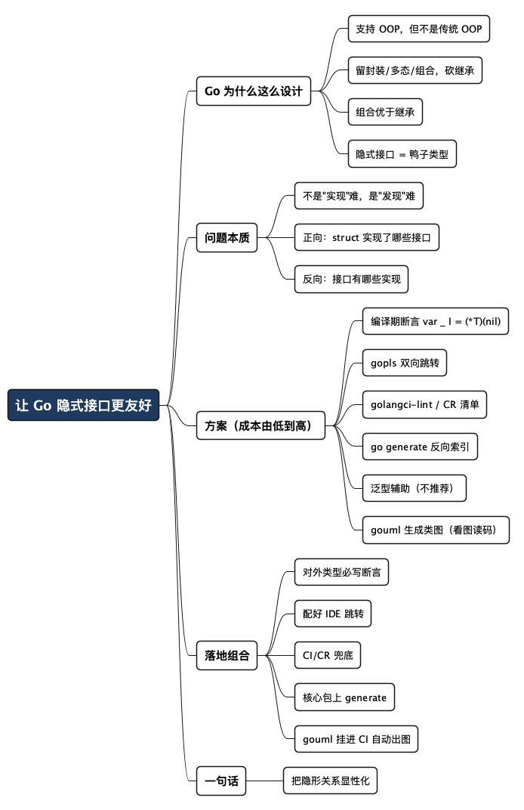

struct 到底实现了哪些接口？让 Go 的隐式接口更友好一点
Posted on 五 10 7月 2026 in Tech
| Abstract | 让 Go 的隐式接口实现更友好 |
|---|---|
| Authors | Walter Fan |
| Category | Tech |
| Version | v1.1 |
| Updated | 2026-07-10 |
| License | CC-BY-NC-ND 4.0 |
struct 到底实现了哪些接口？让 Go 的隐式接口更友好一点
先交代一下我的"出身"，你就知道我为什么会被 Go 硌得慌。
我写了很多年 C++ 和 Java，养成了一个雷打不动的习惯：看代码先看接口、看基类，先抽象、再具象。 拿到一个 C++ 类，我基本上把头文件（.h）扫一眼——成员变量、方法签名、继承自哪个基类、覆写了哪些虚函数——这个类的骨架和能力就八九不离十了。Java 更省心，class RedisStore extends AbstractStore implements Cache, Closeable 一行写在类名后面，它"是谁、会啥"白纸黑字摆在最显眼的地方，IDE 顺着 implements 就能一路点下去。
这套"先抽象后具象"的读码方式，靠的是语言把类型关系明明白白写在脸上。
结果切到 Go，我的老习惯直接失灵了。一个 struct 打开一看,只有一堆数据成员,连方法声明都不在里面——方法是散落在文件各处的 func (r *RedisStore) Xxx()；接口倒是有,可 struct 定义那里没有任何一个字告诉你它实现了哪个接口。我想先看抽象,却发现抽象和具象之间那根线,在代码里根本看不见。
于是就有了下面这个真实踩过的坑。
有一次接手一个别人写的 Go 服务，里面有个 RedisStore 的 struct，方法密密麻麻二三十个。我想搞清楚它到底"是"什么——能当缓存用？能当锁用？能被优雅关闭吗？换成 Java，我瞄一眼 implements 就有答案了；可这是 Go，我翻遍代码也没找到一句话告诉我。只能靠 grep 满仓库找哪个 interface 长得像它的方法集，再一个个比对方法签名。那半天我干的活，本质上是在用肉眼做编译器早就能做的类型匹配。
这就是 Go 隐式接口最爽也最坑的地方。所谓隐式接口，就是一个 struct 不用像 Java 那样写 implements XXX、也不用像 C++ 那样在头文件里 class RedisStore : public Cache 明写继承，只要它把某个接口要求的方法都实现了，编译器就认它"是"那个接口——业界管这叫 duck typing（鸭子类型）：走起来像鸭子、叫起来像鸭子，那它就是鸭子。写的时候确实解耦得漂亮，但代价是这层"实现关系"是隐形的：谁实现了谁，代码里没有任何显式标记。C++ 程序员那套"看头文件就懂类结构"、Java 程序员那套"看 implements 就知道是啥"的读码直觉，到这里全部作废——人也好、IDE 也好，都得费劲去猜。
那能不能不改 Go 语言、不等官方给新语法，就把这份"可发现性"补回来？能，而且办法不少。 这篇我按成本从低到高排一遍，每个都给能跑的例子，最后给一套我自己在项目里推的组合拳。看完你至少不用再像我当年那样 grep 一下午。
先约定几个词，怕有读者不熟： - interface（接口）：Go 里一组方法的集合，比如"能
Read就算Reader"。它只规定"要会做什么"，不管"具体怎么做"。 - 隐式实现：struct 不用声明"我实现了某接口"，方法凑齐了就自动算实现。好处是解耦，坏处是关系看不见。 - gopls：Go 官方的语言服务器（Language Server），VS Code、GoLand、Neovim 里的智能提示、跳转、补全，背后基本都靠它。 - golangci-lint：Go 生态里最常用的"代码体检"聚合工具，能一次跑一堆静态检查规则。
一、先聊聊 Go 为什么这么设计：它到底算不算面向对象？
在骂"看不见"之前，得先搞清楚 Go 为什么故意这么设计。不然你会以为这是个 bug，其实它是个 feature。
先回答那个经常被吵翻天的问题：Go 是面向对象语言吗？
我的答案是：Go 支持面向对象编程，但它不是一门传统意义上的 OOP 语言。 Go 官方 FAQ 自己的说法也很微妙——"Yes and no"（是，也不是）。
怎么理解这句拧巴的话？先看看传统 OOP（以 Java、C++ 为代表）通常绑着哪几样东西：
- 类（class）：数据和方法打包在一起；
- 继承（inheritance）：子类
extends父类，一层层往下传； - 多态（polymorphism）：父类引用指向子类对象；
- 封装（encapsulation）：private/protected/public 控制可见性。
Go 的态度是：这几样，有的留、有的换、有的直接砍。
| OOP 特性 | Java / C++ | Go 的做法 |
|---|---|---|
| 封装 | class + 访问修饰符 | 留下了：靠首字母大小写控制导出（大写 public，小写 private） |
| 方法绑定 | 方法写在 class 里面 | 换了个法子：方法挂在类型上（func (r *RedisStore) Get()），struct 和方法是分开写的 |
| 继承 | extends 类继承 |
直接砍了：没有继承，只有组合（embedding，把一个类型嵌进另一个） |
| 多态 | 继承 + 虚函数 | 换成 interface：谁实现了接口，谁就能被当接口用 |
看出来了吗？Go 做了个很大胆的取舍——它保留了面向对象最有价值的部分（封装、多态、组合），却砍掉了最容易出问题的部分（继承）。
Go 的设计者们（Rob Pike、Ken Thompson 这几位老江湖，Unix 和 C 的亲历者）见过太多大型 C++/Java 项目里，继承层次深到没人看得懂——A 继承 B、B 继承 C，改一个基类，几十个子类跟着抖三抖，这就是著名的"脆弱基类问题"（fragile base class）。所以 Go 干脆立了条规矩：
组合优于继承（composition over inheritance）。 别搞"我是一种 XX"的血缘关系，多搞"我拥有一个 XX、我会做 XX"的能力拼装。
而隐式接口，正是这条哲学的技术落点。既然不要继承那套"血缘认亲"，那"某类型是不是某接口"就不该靠声明来认，而应该靠它实不实际会做那些事来认——这就是鸭子类型：不看你爸是谁，只看你会不会叫。
好处是解耦到极致：我可以给一个别人写的、我改不了源码的类型，凭空定义一个接口，只要它方法凑齐了就能用。这在 Java 里是做不到的（Java 得改人家的 class 加 implements）。
代价呢？就是开头那个坑——"实现关系"不再写在代码里，它藏在"方法集匹配"这件事本身里，人和工具都得自己去推算。
所以这篇要补的，从头到尾都不是"给 Go 加继承"或者"逼它变成 Java"，而是：在尊重它这套刻意取舍的前提下，把那份被隐藏起来的实现关系重新变得看得见。
二、问题到底出在哪：不是 Go 错了，是关系"隐身"了
先别急着骂 Go。隐式接口是它刻意的设计哲学，让你能"事后"给别人的类型套接口，解耦能力极强——这一点比 Java 那套显式 implements 灵活多了。
问题只在一个字：看不见。
- 看着一个 struct，我不知道它实现了哪些接口（正向）；
- 看着一个 interface，我不知道有哪些 struct 实现了它（反向）；
- 我以为自己实现了某接口，结果少写一个方法，编译器要等到我真去赋值那一刻才报错——甚至有时候永远不报，因为那段赋值代码根本没写。
Go 隐式接口的问题，从来不是"实现"，而是"发现"。 我们要补的不是语言能力，是让实现关系重新"可见"。
想通这一点，后面所有方案就都好理解了：它们干的都是同一件事——把隐形的实现关系，重新变得看得见、点得到、查得出。
三、方案一：编译期断言（性价比最高，先把它焊死）
如果这篇你只想记一件事，就记这个。
package store
type Cache interface {
Get(key string) ([]byte, bool)
Set(key string, val []byte)
}
type RedisStore struct{}
func (r *RedisStore) Get(key string) ([]byte, bool) { return nil, false }
func (r *RedisStore) Set(key string, val []byte) {}
// 编译期断言：确保 *RedisStore 确实实现了 Cache
var _ Cache = (*RedisStore)(nil)
这一行 var _ Cache = (*RedisStore)(nil) 是 Go 社区最推荐的写法，值得拆开讲讲它凭什么这么优雅：
(*RedisStore)(nil)造了一个类型是*RedisStore、值是nil的指针，不分配任何内存；- 把它赋给
Cache类型的变量，编译器就必须验证"*RedisStore到底是不是Cache"； - 变量名用
_（空标识符），表示"我只要这个检查，不要这个变量"，所以零运行时开销。
好处很实在：编译期就报错（少写个 Set 直接编译不过）、IDE 能顺着这行跳转、Go 官方源码里到处都是这么写的。
一个 struct 实现多个接口时，把断言堆在一起，可读性直接拉满：
type RedisStore struct{}
var (
_ Cache = (*RedisStore)(nil)
_ io.Closer = (*RedisStore)(nil)
_ fmt.Stringer = (*RedisStore)(nil)
)
读代码的人第一眼就知道：RedisStore 提供缓存能力、能被关闭、能打印自己。这比把这些能力散落在二三十个方法里、让人自己拼图，友好太多了。
给每个对外的类型，都写上编译期断言。 一行代码换来"关系可见 + 编译期保护"，是我见过投入产出比最高的 Go 习惯。
四、方案二：gopls 双向跳转（很多人装了却没用起来）
上面那招是"写"层面的。到了"读"层面，其实你手边的 IDE 早就能帮你，只是很多人不知道。
gopls 内部本来就在计算类型和接口的实现关系，只是 IDE 没把它摆在显眼位置。这几个功能你现在就能用：
- Find Implementations（查找实现）：光标停在
type Cache interface上，右键就能列出所有实现它的 struct——RedisStore、MemoryStore、DummyCache全出来，这就是我开头那半天想要的东西。 - Go to Implementation（跳到实现）：反过来，从接口方法直接跳到某个具体实现。
- CodeLens / Hover：把光标放到 struct 上，悬浮提示能显示它实现了哪些接口。
VS Code 里可以在 settings.json 打开 CodeLens：
{
"gopls": {
"codelenses": {
"generate": true,
"test": true
}
}
}
GoLand 更直接：接口和实现的行号旁边会有个小图标（向上/向下的箭头），点一下就在接口和实现之间来回跳。
一句话：方案一负责"写清楚"，gopls 负责"查得到"，两者是配套的。 断言写得越勤，gopls 跳起来越准。
五、方案三：golangci-lint 兜底（防止人偷懒漏写断言）
方案一再好，也架不住人偷懒——新加个类型忘了写断言，关系又隐身了。这时候上 lint 来兜底。
golangci-lint 里可以配 forcetypeassert、nilnil 这类规则，也有团队会写自定义规则强制"对外类型必须有编译期断言"。一个最小配置长这样：
# .golangci.yml
linters:
enable:
- govet
- staticcheck
- unconvert
理想效果是：当有人写了个 RedisStore 明明实现了 Cache，却没补那行 var _ Cache = ...，CI 直接给个提示：
warning: RedisStore implements Cache but has no compile-time assertion.
Consider adding: var _ Cache = (*RedisStore)(nil)
说实话，原生规则里"强制断言"这条还得靠自定义 linter 或团队约定来落地，社区没有开箱即用的官方规则。但把它写进团队的 Code Review checklist，成本几乎为零，效果立竿见影。 工具兜不住的，就用约定兜。
六、方案四：go generate + 文档生成（大型项目的"反向索引"）
项目一大，光靠人和 IDE 就不够了，得让工具自动维护一份"接口 → 实现"的清单。
做法是给接口所在的文件加一行 go:generate：
//go:generate impl-index -out cache_impl_gen.go
package store
type Cache interface {
Get(key string) ([]byte, bool)
Set(key string, val []byte)
}
跑一次 go generate ./...，工具扫描整个包，生成一份索引文件：
// Code generated by impl-index. DO NOT EDIT.
package store
// Cache is implemented by:
// - *RedisStore (store/redis.go)
// - *MemoryStore (store/memory.go)
// - *DummyCache (store/dummy.go)
这份文件的价值不在于被编译（它就是几行注释），而在于它是一份能跟着代码走、自动更新的"通讯录"：新加一个实现，重新 generate 一下就更新，比手写文档靠谱得多。很多 Java IDE 的 "Show Implementations" 面板，本质上就是在维护这么一份索引，只不过它是内存里的、实时的。
再进一步，go doc / pkgsite 生成的 API 文档里，其实也可以把"本类型实现了哪些接口""本接口有哪些实现"列出来。Rust 的 rustdoc 在这方面做得很成熟，Go 这边生态稍弱，但用生成工具补一层完全可行。
人维护清单一定会漏，工具维护清单才靠谱。
go generate的哲学就是：能自动生成的，绝不手写。
七、方案五：泛型辅助断言（了解即可，别当主力）
Go 1.18 有了泛型后，理论上可以写个泛型断言函数：
func Assert[I any, T any](_ T) {
var _ I = *new(T) // 概念示意：约束 T 必须能赋给 I
}
然后在 init 里调用来触发检查。但说实话，这套写法绕、可读性差，还容易在泛型约束上翻车。跟下面这行朴实无华的老写法比：
var _ Cache = (*RedisStore)(nil)
泛型那套毫无优势。列在这里只为让你知道"有这条路"，但真别用它当主力。 工程里，简单直接的写法几乎总是赢家。
八、方案六：干脆写个工具，把类图"画"出来
前面几招都是"让关系可见"，但最贴近我这种老 C++/Java 脑子的，其实是最后这一招——直接生成一张 UML 类图。头文件我看惯了，类图我更看惯了：谁实现了谁、谁嵌了谁、有哪些字段和方法，一张图全在脸上。
问题是 Go 没有现成的"看图"入口。那就自己动手。好消息是，不用自己写 parser——Go 官方的 go/types 和 golang.org/x/tools/go/packages 已经把类型信息、方法集、甚至"谁实现了哪个接口"都算好了，我们只要把它读出来、渲染成 PlantUML 或 Mermaid 就行。
我写了个小工具 gouml，核心逻辑就一句话：用 types.Implements 精确判定实现关系，再吐成类图——脚本能出，图片也能直接出。 用起来是这样：
# 装一下
go install github.com/walterfan/gouml/cmd/gouml@latest
# 扫描当前模块，生成 PlantUML 脚本（打到 stdout）
gouml ./...
# 只画一个包，输出 Mermaid 脚本
gouml -format mermaid ./store
# 连标准库接口（io.Closer / fmt.Stringer / error…）一起画
gouml -std -o diagram.puml ./...
不想手动再拿脚本去渲染？加个 -img png|svg 就一步出图：
# 本地装了 plantuml，直接出 PNG
gouml -std -img png -o diagram.png ./...
# 本地装了 mermaid-cli(mmdc)，出 SVG
gouml -format mermaid -img svg -o diagram.svg ./store
# 本地啥都没装？-remote 走托管服务（PlantUML 用 Kroki，Mermaid 用 mermaid.ink）
gouml -img png -remote -o diagram.png ./...
一句提醒：
-remote会把图的源码结构上传到第三方服务，公司内部代码请老老实实用本地渲染。
拿本文那个 store 包跑一遍，输出（节选）长这样：
class RedisStore {
+Addr : string
+Get(key string) ([]byte, bool)
+Set(key string, val []byte)
+Close() error
+String() string
}
interface Cache {
+Get(key string) ([]byte, bool)
+Set(key string, val []byte)
}
TieredStore o-- Cache : embeds
RedisStore ..|> Cache
RedisStore ..|> Closer
RedisStore ..|> Stringer : "fmt"
渲染成图，RedisStore 到底"是"什么，一眼就够了：实现了 Cache、Closer，加 -std 还能看到它满足 fmt.Stringer；TieredStore 用的是嵌入组合。这正是我开头 grep 一下午想要的答案。
它的关键实现选择有几点值得说：
- 不靠正则、不靠文本匹配，全程用
go/packages加载真实类型信息——所以[]byte这种类型、指针接收者的方法集，都算得准； - 实现关系用
types.Implements判定，同时测T和*T两套方法集，避免漏掉指针接收者的实现； - 组合（embedding）单独画成
o--聚合箭头，把 Go "组合优于继承"那套关系也显性化； - 标准库接口检测是可选的（
-std），默认只画包内接口，图干净；打开后能顺带告诉你"哦，它其实还是个Stringer"； - 出图分本地和远程两条路：本地调
plantuml/mmdc，零网络依赖；找不到工具时给明确提示，也能-remote回退到 Kroki / mermaid.ink，一行命令直接拿到 PNG/SVG。
这招的定位很清楚：它不是要取代前面几招，而是给"读代码先看抽象"这类人补一个入口。 把它挂进 go generate 或 CI，让类图随代码自动更新，效果约等于把 Java IDE 那个 "Type Hierarchy" 面板搬到了 Go 项目里。
工具代码开源在 github.com/walterfan/gouml，Apache 2.0 协议，欢迎拿去改成你团队顺手的样子。
九、六种方案怎么选：一张对照表
方案有点多，我按"你是谁、项目多大"帮你对号入座：
| 方案 | 成本 | 主要解决 | 适合场景 |
|---|---|---|---|
编译期断言 var _ I = (*T)(nil) |
极低 | 写清楚 + 编译期保护 | 所有项目，无脑上 |
| gopls 双向跳转 | 零（装了就有） | 读代码时查得到 | 所有项目，配好 IDE |
| golangci-lint / CR checklist | 低 | 防止漏写断言 | 有 CI、多人协作 |
| go generate 反向索引 | 中 | 自动维护实现清单 | 中大型、接口多 |
| 泛型辅助断言 | 中（且绕） | （无明显优势） | 基本不推荐 |
| gouml 生成类图 | 低（装一下就用） | 一图看清全部关系 | 想"看图读码"的人，接口多的项目 |
一句话记法：小项目一招（断言 + IDE），中项目加 lint，大项目再上 generate；想看图就配把 gouml。
十、我在项目里实际推的组合
如果让我给一个团队定规矩，不改 Go 语言、又能大幅提升开发体验，我会要求下面五条一起上：
-
对外类型一律写编译期断言
每个 public 的 struct，都在定义附近写上var _ Interface = (*Type)(nil)。多个接口就用var ( ... )堆一起，让"这个类型有哪些能力"一眼可见。这是地基，别省。 -
配好 gopls，用起来双向跳转
团队统一 IDE 配置，确保 Find Implementations / Go to Implementation 能用。新人入职第一课就教这个，省下的都是grep的命。 -
CI 加 lint 或 CR 清单兜底
把"对外类型必须有断言"写进 Code Review checklist，条件够就上自定义 linter。工具兜住人的惰性。 -
接口多的核心包，上 go generate 维护索引
给核心接口生成"实现清单"文件，随代码自动更新，当作活的文档用。 -
想"看图读码"的，把 gouml 挂进 CI
让类图随代码自动生成、自动更新。对我这种老 C++/Java 脑子，一张图胜过十次跳转。
这套下来，你既保住了 Go 隐式接口那份灵活解耦的哲学，又拿回了接近 Java、Rust 的可发现性和可维护性——而且一行语言规范都没改，一个编译器补丁都没等。 对绝大多数 Go 项目，这已经够用了。
最后一句
Go 的隐式接口，像极了那种"能力很强、但从不主动汇报"的同事：活干得漂亮，可你不问，他绝不告诉你他到底会啥。
语言给了你解耦的自由，代价是你得自己动手，把那份"看不见的关系"重新变得看得见。好在这活儿不难，一行断言、一个快捷键，就能让下一个接手代码的人（很可能就是半年后的你自己）少骂一句。
工程里很多所谓的"体验问题"，其实都不是能力问题，而是"可见性"问题。把隐形的东西显性化——这句话，值得从接口一路用到人生。
全文思维导图
@startmindmap
<style>
mindmapDiagram {
node {
BackgroundColor #F8F9FA
RoundCorner 10
Padding 10
FontSize 13
}
:depth(0) {
BackgroundColor #1E3A5F
FontColor white
FontSize 18
FontStyle bold
}
:depth(1) {
FontSize 15
FontStyle bold
}
:depth(2) {
FontSize 13
}
}
</style>
* 让 Go 隐式接口更友好
** Go 为什么这么设计
*** 支持 OOP，但不是传统 OOP
*** 留封装/多态/组合，砍继承
*** 组合优于继承
*** 隐式接口 = 鸭子类型
** 问题本质
*** 不是"实现"难，是"发现"难
*** 正向：struct 实现了哪些接口
*** 反向：接口有哪些实现
** 方案（成本由低到高）
*** 编译期断言 var _ I = (*T)(nil)
*** gopls 双向跳转
*** golangci-lint / CR 清单
*** go generate 反向索引
*** 泛型辅助（不推荐）
*** gouml 生成类图（看图读码）
** 落地组合
*** 对外类型必写断言
*** 配好 IDE 跳转
*** CI/CR 兜底
*** 核心包上 generate
*** gouml 挂进 CI 自动出图
** 一句话
*** 把隐形关系显性化
@endmindmap

本作品采用知识共享署名-非商业性使用-禁止演绎 4.0 国际许可协议进行许可。 欢迎在我的个人网站 https://www.fanyamin.com 访问原文并评论。